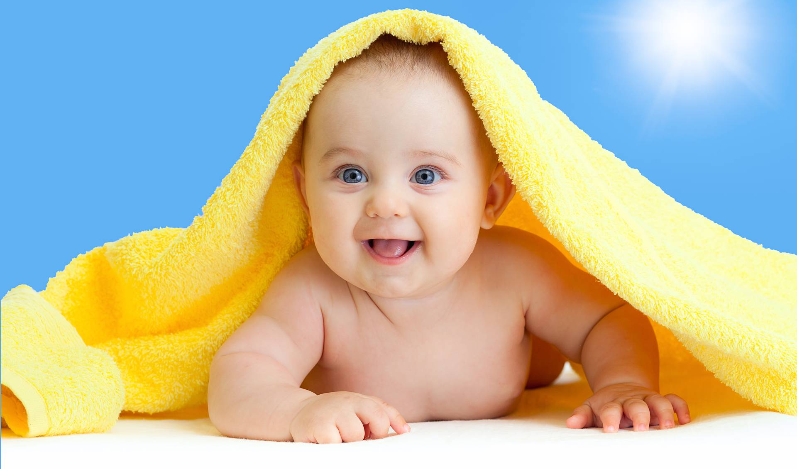
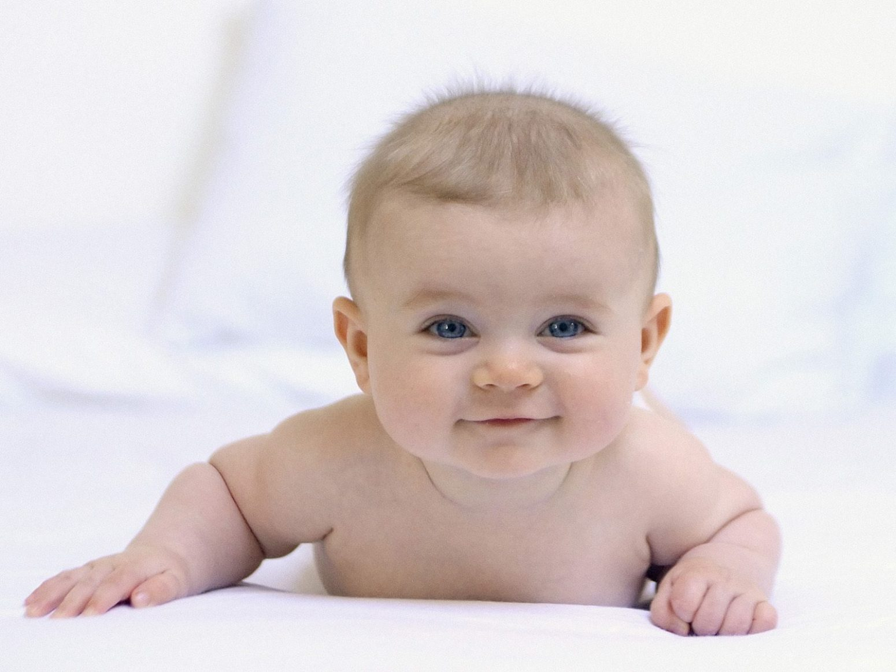

Как воспитать двойняшек: советы психолога
Теги: Рекомендации специалистов 0-1 год 1-3 года 3-7 лет Личное пространство
Рождение двойняшек — это открытие удивительного мира двойных приключений, двойных радостей… и двойных забот. Однако все заботы родителей окупятся сторицей при правильном воспитании каждого близнеца, умелой поддержке его самооценки и привязанности. Наша цель — запастись терпением, развить в себе гибкость мышления и оптимизм.
Однояйцовые или двуяйцовые?
 Существует 2 типа близнецов. Двуяйцовые близнецы — это дети, развившиеся из двух разных яйцеклеток. Они могут быть разного пола, иметь разный набор генов и внешние отличия. Однояйцовые близнецы развиваются, когда яйцеклетка после оплодотворения разделяется на две части. Однояйцовые близнецы всегда будут одного пола, у них будет идентичный набор генов и даже похожие отпечатки пальцев. Внешне у них также не будет отличий.
Ты и я — мы так похожи, схожи внешне и душой…
С самого рождения между близнецами развивается особая связь, которая отличается от обычных отношений между братьями и сестрами. Можно заметить, как близнецы высматривают эмоции друг друга: если один смеется, второго это тоже рассмешит. А если один будет плакать, другой будет проявлять к нему внимание и заботу.
Взрослея, близнецы все больше времени проводят в совместных занятиях. Это на пользу маме, так как позволяет ей заняться домом и уделить себе немного времени. У двойняшек раньше других детей развивается чувство уверенности и безопасности. У них лучше других детей выражена эмпатия и дух соперничества. Однако из-за постоянного общения только с себе подобным их также отличает задержка в познавательной сфере и недостаточное развитие социальных навыков. Каждый ребенок индивидуален
Часто родители обращаются с близнецовой парой как с единым ребенком. Кормят их из одной бутылочки, одинаково одевают, укладывают спать в одной кроватке и всегда держат вместе. Таким образом они затрудняют у детей процесс становления индивидуальности и идентификации личности. Относитесь к детям как к личности, имеющей свои потребности и желания. По возможности обеспечьте им личное пространство. Игрушки, посуда, одежда: у каждого близнеца должно быть свое собственное.
Стремление к сходству и различию у близнецов будет меняться с возрастом. В детстве близнецы часто повторяют друг за дружкой, играют в одинаковые игрушки и охотно носят одинаковую одежду. В подростковом возрасте наблюдается резкое отрицание своего сходства, происходит изменение структуры отношений, начинает преобладать стремление к различию.
Соперничество и ссоры
В период взросления ссоры между близнецами неизбежны. Это абсолютно нормально, запаситесь терпением и дайте им возможность самим уладить конфликт. Считается, что в паре близнецов один всегда принимает на себя роль лидера, а второй становится ведомым. Это доминирование порой принимает ситуационный и поочередный характер, и все же не стоит провоцировать их на соперничество.
Рекомендации родителям двойняшек
- Выберите для близнецов разные по звучанию имена. При выборе похожих имен близнецам бывает трудно отделить собственную индивидуальность.
- Приучайте детей к одному графику. Спать и есть – одновременно. Вовлекайте в процесс заботы за близнецами отца и других членов семьи.
- Не покупайте двойняшкам одинаковые игрушки, если не хотите, чтобы они постоянно ссорились. Исходите от индивидуальных вкусов и интересов каждого.
- Учите детей отличать свое от чужого. Если дети близнецы — это не значит, что они должны постоянно чем-то делиться. Каждому ребенку хочется иметь что-то свое личное: свой велосипед, свою кровать, свою игрушку и т. д.
- Избегайте соперничества между близнецами. Научите их ждать своей очереди и спокойно выслушайте каждого.
- Выделяйте время, чтобы пообщаться с каждым из близнецов наедине.
- Подчеркивайте и поощряйте различия между детьми. Чаще хвалите их, но за разные поступки.
- Расскажите, как это здорово - быть близнецами! Вместе смотрите фильмы о взаимопомощи близнецов, придумайте сказку о том, какие увлекательные приключения ждут близнецов в нашем мире.
Эльнара Агаева, семейный психолог